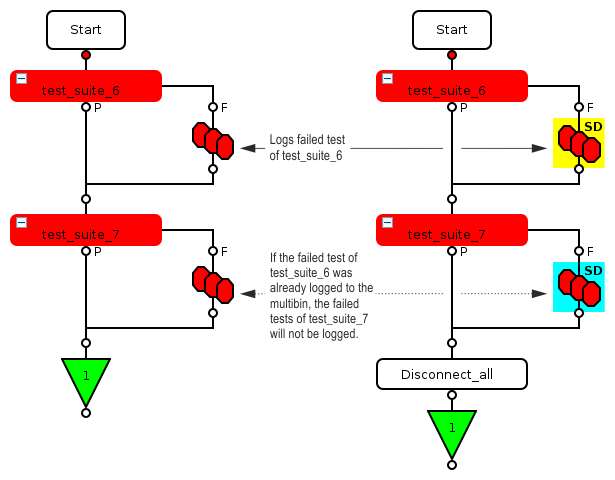

Use of multibins
Using the multibin you can create different hardware and software bins in a test suite, where each hardware and software bin pair is related to a TESTSET object.
Use the multibin feature in the testflow to allow multiple or flexible bin and test number assignments. For more information on the usage of all kinds of bins, see Use of bins with multisite tests.
Internal multibin variable
SmarTest differentiates between two multibin related processes:
- Setting an internal multibin variable.
SmarTest uses the internal multibin variable inside of test suites and for test suites without a bin or multibin. This variable can be overwritten according to the binning rules (see below).
- Logging its value to the multibin.
At a multibin node, SmarTest logs the internal multibin variable to the multibin.
NoteIf a multibin was logged at a multibin node, it cannot be overwritten anymore, even not in another multibin node in the same testflow:
The first multibin node after a failing test suite logs the multibin value to the multibin. Failing tests of following test suites with multibin nodes will not log to the multibin, with one exception: You call RESET_MULTIBIN after a multibin node and before a test suite followed by another multibin node.

Note: In the example above, the left flow uses only Multi Bin nodes while the right flow uses only Multibin SmartDisconnect test suite nodes.
Overon testflow flag combined with multibins
The Overon testflow flag allows you continuing the testflow after the stop bin. For information on how to use the flag, refer to Using the Overon feature while running a testflow.
- The global_overon must be set to on.
- TMLimits allows you defining the Bin_overon per SW bin.
- The test flow for a failing site will continue after binning if
- the global_overon flag has been set to true and
- all of the failing tests within the test suite have the Bin_overon flag set to yes.
- The test flow for a failing site will be stopped after special test suite
bin_disconnect has been executed for the
site if
- the global_overon flag has been set to false or
- any of the failing tests within the test suite have the Bin_overon flag set to no.
Binning rules
- SmarTest logs the multibin per site, and writes it to the data log as BinReachedEvent (see Overon flag, Software Bin Record (SBR)).
- set_fail and set_pass flags do not influence the binning, with one exception for the set_pass flag: If the multibin_mode flag is set to suppress_on_set_pass, SmarTest does not set the internal multibin variable.
- Multiple calling the same non-temporary TESTSET object, which can
be the system-prepared class object
TestSetor the same user objectTESTSET<object name>:If the same object is multiple called, the first call of the same object with a failing test sets the internal multibin variable. Failing tests of the same object at a later point of time do not change the internal multibin variable.
- If the temporary TESTSET() object is multiple
called, the last called object with a failing test determines the internal
multibin variable, and overwrites the internal multibin variable, which was set
by a prior object with a failing test.
The same rule applies, if the SET_MULTIBIN API is multiple called: The last called SET_MULTIBIN object determines the bin, and overwrites the variable, which was set by prior SET_MULTIBIN objects with failing tests.
- Calling different TESTSET objects, which can be the
system-prepared class object TestSet, different user object
TESTSET<object name> or a temporary object TESTSET():If different objects are called, the last called object with a failing test determines the internal multibin variable, and overwrites the internal multibin variable, which was set by prior objects with failing tests.
For more details and examples, see Use of TESTSET with multibin.
- The binning information of all SMC_TEST() calls are validated in
the SMC_SYNCHRONIZE() test suite. Inside of the SMC_SYNCHRONIZE()
test suite all SMC_TEST() calls are validated like calling the same
non-temporary TESTSET object in the same test suite: The first failing SMC_TEST() test suite sets the internal multibin variable for the
SMC_SYNCHRONIZE() test suite.
For more details and examples, see Use of SMC_TEST() with multibin.
NoteIf you use TESTSET within the SMC framework instead of SMC_TEST, binning happens in SMC_SYCHRONIZE according to the binning rules as for SMC_TEST. For details, see Use of SMC_TEST() with multibin.
If you use, within a testflow, the SMC framework and TESTSET test suites independent of each other, binning happens according to the binning rules explained in Use of TESTSET and SMC_TEST() test suites with multibin.
- Using test suites with and test suites without SMC_TEST():
If a test fails in a non-SMC test suite, which is called before SMC_SYNCHRONIZE(), the failing non-SMC test suite determines the multibin value.
For more details and examples, see Use of TESTSET and SMC_TEST() test suites with multibin.
Functional changes
- Introduced in SmarTest 7.1.4
- SmarTest 7.2.2: Patch1 - New testflow flag multibin_mode